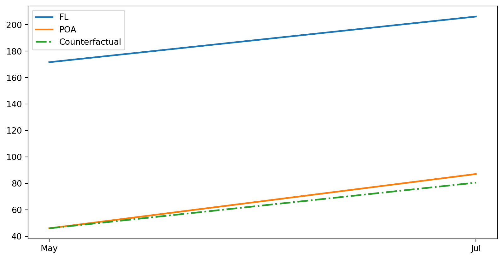
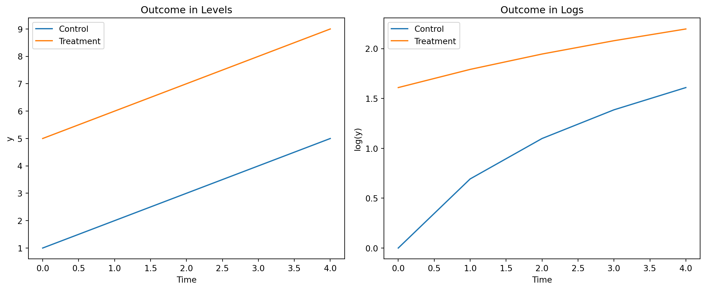
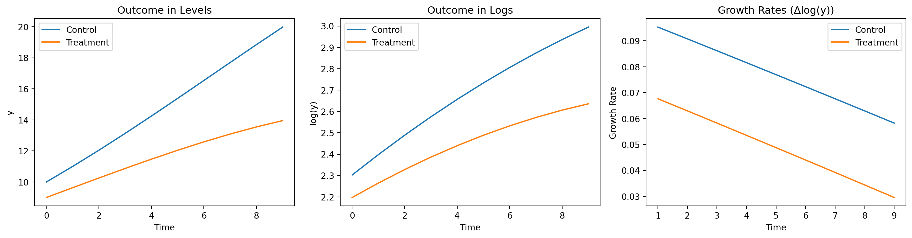

ECON526
University of British Columbia
| deposits | ||
|---|---|---|
| poa | 0 | 1 |
| jul | ||
| 0 | 171.642308 | 46.01600 |
| 1 | 206.165500 | 87.06375 |
\[ % \def\Er{{\mathrm{E}}} \def\En{{\mathbb{E}_n}} \def\cov{{\mathrm{Cov}}} \def\var{{\mathrm{Var}}} \def\R{{\mathbb{R}}} \newcommand\norm[1]{\left\lVert#1\right\rVert} \def\rank{{\mathrm{rank}}} \newcommand{\inpr}{ \overset{p^*_{\scriptscriptstyle n}}{\longrightarrow}} \def\inprob{{\,{\buildrel p \over \rightarrow}\,}} \def\indist{\,{\buildrel d \over \rightarrow}\,} \DeclareMathOperator*{\plim}{plim} \]
\[ % \begin{align*} ATT & = \Er[y_{i1}(1) - \color{red}{y_{i1}(0)} | D_{i1} = 1] \\ & = \Er[y_{i1}(1) - y_{i0}(0) | D_{i1} = 1] - \Er[\color{red}{y_{i1}(0)} - y_{i0}(0) | D_{i1}=1] \\ & \text{ assume } \Er[\color{red}{y_{i1}(0)} - y_{i0}(0) | D_{i1}=1] = \Er[y_{i1}(0) - y_{i0}(0) | D_{i1}=0] \\ & = \Er[y_{i1}(1) - y_{i0}(0) | D_{i1} = 1] - \Er[y_{i1}(0) - y_{i0}(0) | D_{i1}=0] \\ & = \Er[y_{i1} - y_{i0} | D_{i1}=1, D_{i0}=0] - \Er[y_{i1} - y_{i0} | D_{i1}=0, D_{i0}=0] \end{align*} \]
Plugin: \[ % \widehat{ATT} = \frac{ \sum_{i=1}^n (y_{i1} - y_{i0})D_{i1}(1-D_{i0})}{\sum_{i=1}^n D_{i1}(1-D_{i0})} - \frac{ \sum_{i=1}^n (y_{i1} - y_{i0})(1-D_{i1})(1-D_{i0})}{\sum_{i=1}^n (1-D_{i1})(1-D_{i0})} \]
Regression: \[ % y_{it} = \delta_t + \alpha 1\{D_{i1}=1\} + \beta D_{it} + \epsilon_{it} \] then \(\hat{\beta} = \widehat{ATT}\)
poa_before = data.query("poa==1 & jul==0")["deposits"].mean()
poa_after = data.query("poa==1 & jul==1")["deposits"].mean()
fl_before = data.query("poa==0 & jul==0")["deposits"].mean()
fl_after = data.query("poa==0 & jul==1")["deposits"].mean()
plt.figure(figsize=(10,5))
plt.plot(["May", "Jul"], [fl_before, fl_after], label="FL", lw=2)
plt.plot(["May", "Jul"], [poa_before, poa_after], label="POA", lw=2)
plt.plot(["May", "Jul"], [poa_before, poa_before+(fl_after-fl_before)],
label="Counterfactual", lw=2, color="C2", ls="-.")
plt.legend();
| deposits | |
|---|---|
| Intercept | 171.6423 |
| (2.4989) | |
| poa | -125.6263 |
| (3.0774) | |
| jul | 34.5232 |
| (3.3431) | |
| poa:jul | 6.5246 |
| (4.2478) | |
| R-squared | 0.3126 |
| R-squared Adj. | 0.3122 |
import numpy as np
import matplotlib.pyplot as plt
import pandas as pd
# Parameters
n_periods = 5
n_groups = 2
group_names = ['Control', 'Treatment']
time = np.arange(n_periods)
group = np.array([0, 1]) # 0: Control, 1: Treatment
intercepts = [1, 5] # Different starting points
trend = 1 # Same trend for both groups
# Simulate outcomes
data = []
for g in group:
for t in time:
y = intercepts[g] + trend * t #+ np.random.normal(0,1)
data.append({'group': group_names[g], 'time': t, 'y': y})
df = pd.DataFrame(data)
df['log_y'] = np.log(df['y'])
# Plot levels
plt.figure(figsize=(12,5))
plt.subplot(1,2,1)
for name, grp in df.groupby('group'):
plt.plot(grp['time'], grp['y'], label=name)
plt.title('Outcome in Levels')
plt.xlabel('Time')
plt.ylabel('y')
plt.legend()
# Plot logs
plt.subplot(1,2,2)
for name, grp in df.groupby('group'):
plt.plot(grp['time'], grp['log_y'], label=name)
plt.title('Outcome in Logs')
plt.xlabel('Time')
plt.ylabel('log(y)')
plt.legend()
plt.tight_layout()
plt.show()
# Parameters
n_periods = 10
group_names = ['Control', 'Treatment']
initials = [10, 9] # Different starting values
growth = [1.10, 1.07]
growth_trend = -0.005
# Simulate outcomes
data = []
for g, initial in enumerate(initials):
y = initials[g]
for t in range(n_periods):
data.append({'group': group_names[g], 'time': t, 'y': y})
y *= growth[g] + growth_trend * t
df = pd.DataFrame(data)
df['log_y'] = np.log(df['y'])
# Compute growth rates (difference in logs)
df['growth_rate'] = df.groupby('group')['log_y'].diff()
# Plot levels
plt.figure(figsize=(15,4))
plt.subplot(1,3,1)
for name, grp in df.groupby('group'):
plt.plot(grp['time'], grp['y'], label=name)
plt.title('Outcome in Levels')
plt.xlabel('Time')
plt.ylabel('y')
plt.legend()
# Plot logs
plt.subplot(1,3,2)
for name, grp in df.groupby('group'):
plt.plot(grp['time'], grp['log_y'], label=name)
plt.title('Outcome in Logs')
plt.xlabel('Time')
plt.ylabel('log(y)')
plt.legend()
# Plot growth rates
plt.subplot(1,3,3)
for name, grp in df.groupby('group'):
plt.plot(grp['time'], grp['growth_rate'], label=name)
plt.title('Growth Rates (Δlog(y))')
plt.xlabel('Time')
plt.ylabel('Growth Rate')
plt.legend()
plt.tight_layout()
plt.show()